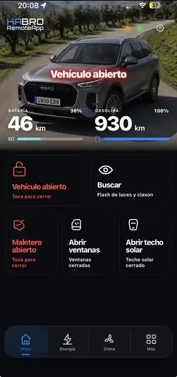
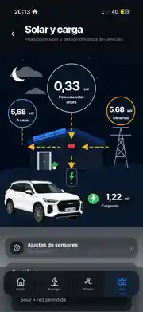

Vehículo + hogar
La información del EBRO convive con tus entidades, escenas y automatizaciones de Home Assistant.
Control remoto, clima, carga, telemetría, avisos y alertas de estado, seguimiento de mantenimiento y energía doméstica en una interfaz móvil clara, rápida y pensada para usuarios de Home Assistant.



SEEBRO RemoteApp HA no pretende sustituir los servicios oficiales de EBRO. Los complementa para quienes ya tienen Home Assistant y quieren ver vehículo, vivienda y energía en el mismo entorno.
La información del EBRO convive con tus entidades, escenas y automatizaciones de Home Assistant.
Batería, consumo, potencia de carga y flujos solares presentados de forma clara y directa.
Acciones habituales del coche organizadas en una interfaz rápida, táctil y pensada para móvil.
Lecturas y métricas derivadas para entender mejor carga, consumo y comportamiento de la batería.
La app oficial sigue siendo la referencia para los servicios conectados de EBRO. SEEBRO RemoteApp HA añade una interfaz alternativa construida alrededor de las entidades que ya tienes integradas en Home Assistant.
Tu canal oficial para la experiencia conectada del vehículo y las funciones proporcionadas por EBRO.
Una vista adicional para quienes quieren relacionar el coche con el resto de su vivienda conectada.


Información útil sin menús interminables. Desde el control diario hasta el mantenimiento, cada bloque responde a una tarea concreta.
Apertura del vehículo, maletero, ventanillas, techo solar y acciones de búsqueda desde un único panel.
Ajusta la temperatura de consigna y lanza modos rápidos de frío o calor con controles táctiles claros.
Consulta el SOC, potencia, consumo, objetivo de carga y opciones de programación en la misma pantalla.
Panel específico para potencia, carga, capacidad y estimaciones que ayudan a interpretar la batería.
Sigue los mantenimientos, revisiones y el control de neumáticos del vehículo para llevar al día el historial y los próximos hitos.
Visualiza producción fotovoltaica, consumo de casa, intercambio con red y potencia destinada al coche.
La app genera avisos visuales y alertas de estado para saber de un vistazo si el vehículo, maletero, ventanillas o el techo solar requieren atención.
La aplicación se alimenta de las entidades disponibles en tu instalación para ofrecer una experiencia conectada y personalizable.
SEEBRO RemoteApp HA no se conecta directamente al vehículo por sí sola. Necesita que tu EBRO ya esté integrado y funcionando correctamente dentro de Home Assistant.
La beta utiliza las entidades que Home Assistant expone del vehículo. Si la integración EBRO no está instalada, configurada y operativa, la aplicación no podrá mostrar datos ni ejecutar controles.
Descargar integración EBRO para HAEl proyecto está en desarrollo activo. El diseño, la compatibilidad y algunas funciones pueden cambiar entre versiones, y su disponibilidad depende de las entidades que exponga cada instalación de Home Assistant. Además, pronto se incorporarán nuevas funciones: es una app pensada para seguir creciendo de forma continua.
Accede a SEEBRO RemoteApp HA desde el navegador. SEEBRO RemoteApp HA seguirá incorporando nuevas funciones y ampliando capacidades. Para novedades, pruebas y conversación técnica del proyecto, entra en la comunidad de Ebro Tech Lab.